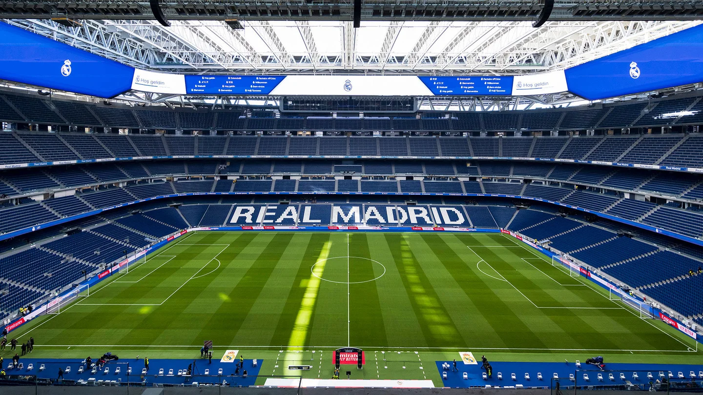

Real Madrid nomeado para o Prémio Laureus como Melhor Equipa 2025

Real Madrid nomeado para o Prémio Laureus como Melhor Equipa 2025 NOTÍCIAS.03/03/2025 O Real Madrid foi nomeado para o Prêmio Laureus de Melhor Equipe 2025. Nosso clube está na disputa pelo prêmio junto com a equipe de Fórmula 1 McLaren; a Seleção Espanhola de Futebol; o Boston Celtics; a Seleção Nacional de Basquete dos Estados Unidos e a Seleção Feminina do Barcelona. O vencedor será escolhido por um júri internacional composto por nomes de destaque no mundo do esporte e será anunciado na cerimônia de premiação que acontecerá na segunda-feira, 21 de abril, no Palácio de Cibeles, em Madri.
Real Madrid lidera ranking da UEFA

Os brancos, atuais campeões europeus, chegaram às oitavas de final da Liga dos Campeões e lideram a classificação.
Real Madrid lidera ranking da UEFA NOTÍCIAS.20/02/2025 O Real Madrid chegou às oitavas de final da Liga dos Campeões e lidera o ranking de coeficientes da UEFA. Os brancos, atuais campeões europeus, estão no topo deste ranking após o playoff com 140.000 pontos. Atrás deles estão o Manchester City (137.750) e o Bayern de Munique (128.750).
O ranking de coeficientes do clube é baseado nos resultados na Liga dos Campeões, Liga Europa e Liga Conferência nas últimas cinco temporadas. Neste período, o Real Madrid conquistou la decimocuarta e la decimoquinta .
| Equipes | Pontos |
|---|---|
| Real Madrid | 140.000 |
| Manchester City | 137.750 |
| Bayern de Munique | 128.750 |
| Liverpool | 123.500 |
| PSG | 104.000 |
| Inter de Milão | 101.750 |
| Roma | 101.500 |
| Borussia Dortmund | 100.250 |
| Chelsea | 95.500 |
| Bayer Leverkusen | 95.250 |
Real Madrid, o clube de futebol com maior receita do mundo pelo segundo ano consecutivo, segundo a Deloitte
O clube ocupa o primeiro lugar, com € 1,045,5 bilhão, no relatório '2025 Football Money League
Real Madrid, o clube de futebol com maior receita do mundo pelo segundo ano consecutivo, segundo a Deloitte NOTÍCIAS.23/01/2025 O Real Madrid foi o clube de futebol com maior receita do mundo na temporada 2023/24, segundo a Deloitte. Pelo segundo ano consecutivo, o relatório da Football Money League coloca o clube na primeira posição com € 1,045,5 bilhão, € 214,1 milhões a mais que no ano passado. Isso representa um número recorde, pois nunca antes um clube liderou este ranking com um faturamento de mais de um bilhão de euros.
A Deloitte afirma que: “A conclusão das obras de renovação do Estádio Bernabéu fez com que as receitas dos dias de jogo dobrassem para € 248 milhões em 2023/24. O clube também relatou um aumento de 20% na receita comercial (de € 403 milhões para € 482 milhões), impulsionado pelo aumento de mercadorias e novos patrocínios de mangas.” O Real Madrid é seguido pelo Manchester City, com receitas de € 837,8 milhões, e pelo Paris Saint-Germain, com € 805,9 milhões.